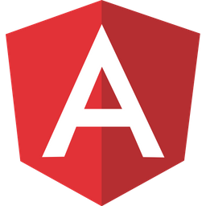
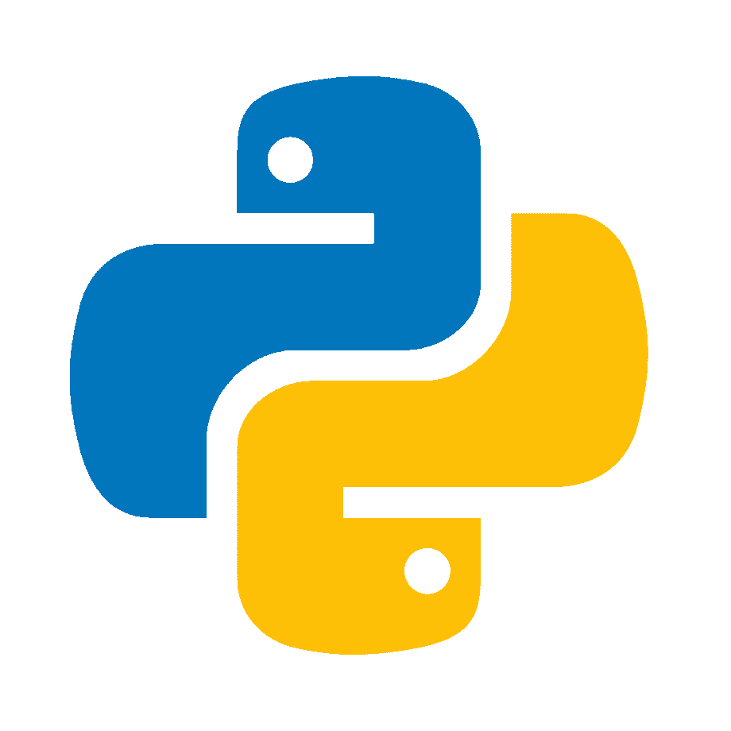
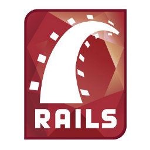
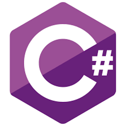
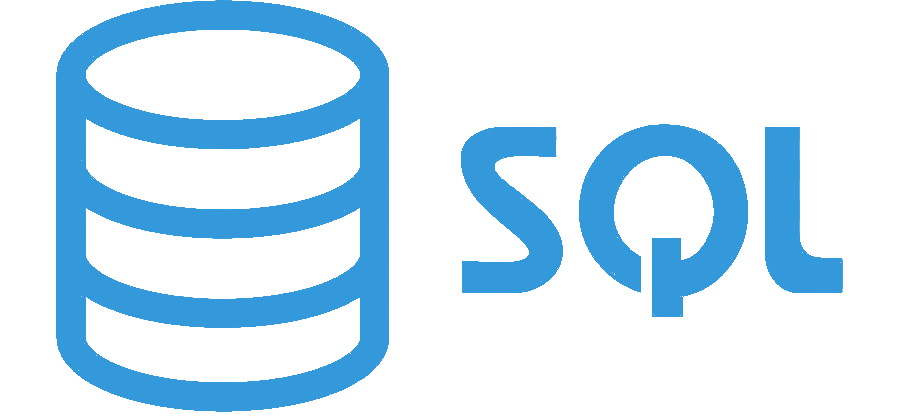

Juan David
Porras Palencia
I'm a software developer graduated from the National University of Colombia. I love problem-solving challenges that imply an algorithmic solution, but I also enjoy building functional user interfaces that interact with other humans. My experience mainly focuses on developing in Angular and Java, but I've also have some experience in C# and Python. I have knowledge in OOP, data structures and algorithms. I always try to write clean code and follow the best practices. Good will to learn new things and share knowledge.

Knowledge in frontend technologies


- 
Knowledge in backend technologies
- 
- 
- 
- 

Projects from University
Dinner QR
A web app for making orders in a restaurant from user's phone. Project for the subject Software Engeneering II, later repogrammed in Android
UNcupo
A web app in Ruby on Rails where students can ask for enrollments in many subjects. I worked in the maintenance of this app at the service of students
Projects from past jobs
ROAIMS
A set of interoperable software tools to maintain assets in an optimal condition. I improved the UX of this application and optimized the source code.
Various services using ESB
These services are built using Apache Camel and deployed in Red Hat Fuse. These services provide a middleware solution for financial transactions.

More projects from past jobs
SIRE
Payment platform for Los Andes University built in JSF.
Santander Bank Application
An Angular application migrated from an older application for bank employees.
Some Personal projects
SunElev
A mobile app for Android that computes the height of the sun on any place in the world. It also changes the background color according to the color of the sky (day, night, twilight).
YAWA
This app shows the current and historical weather of any place in the world and sets the background color according to the temperature. This application was made in Angular.
Other Professional Interests
- Algorithms
- Developing mobile apps
- Data science
- Machine learning